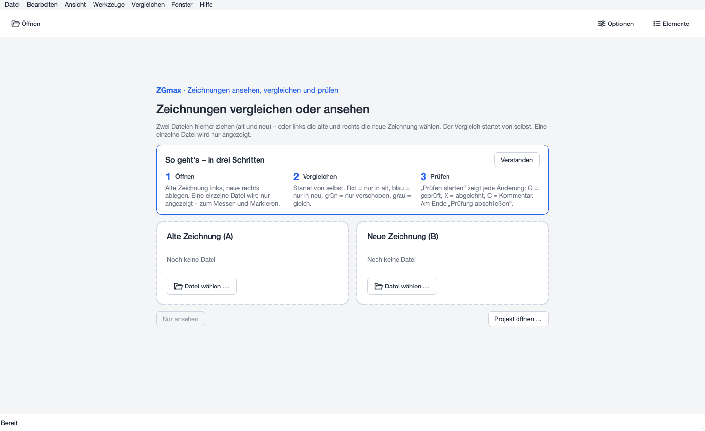
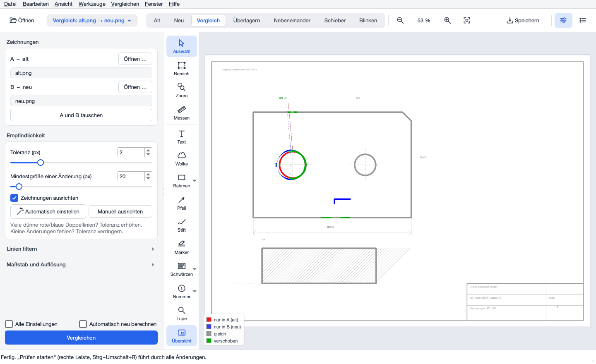
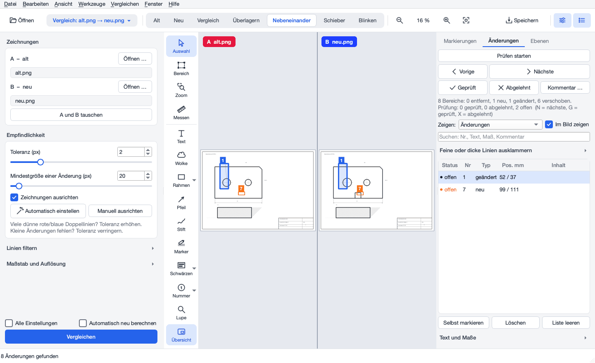
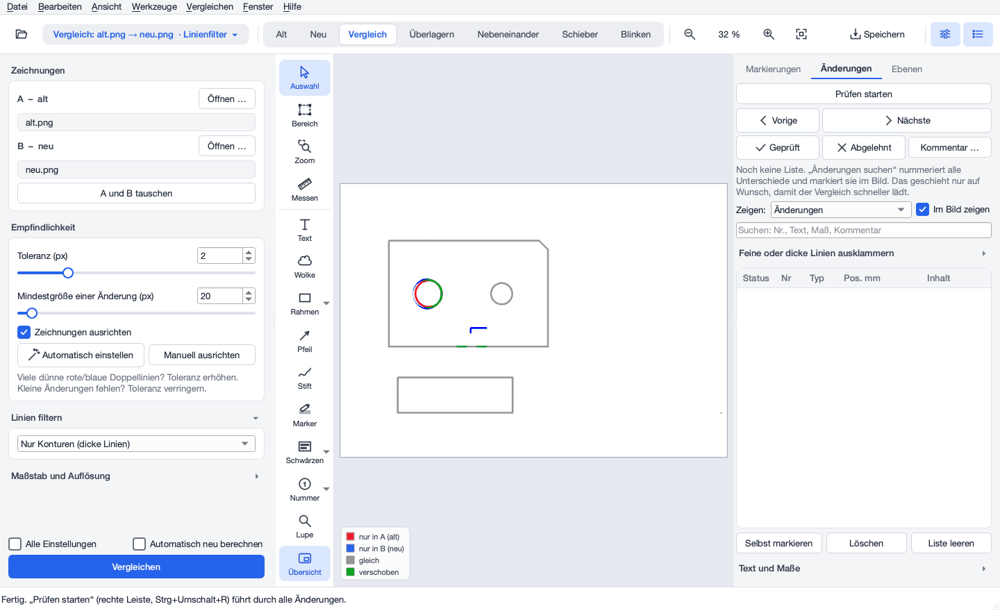
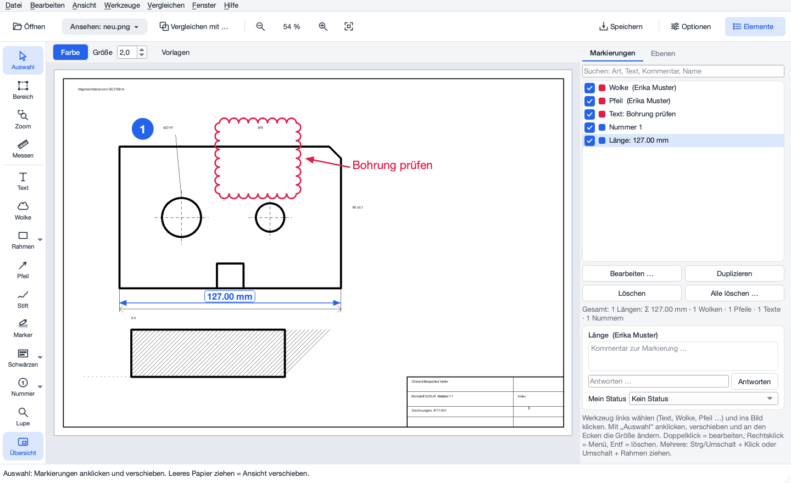
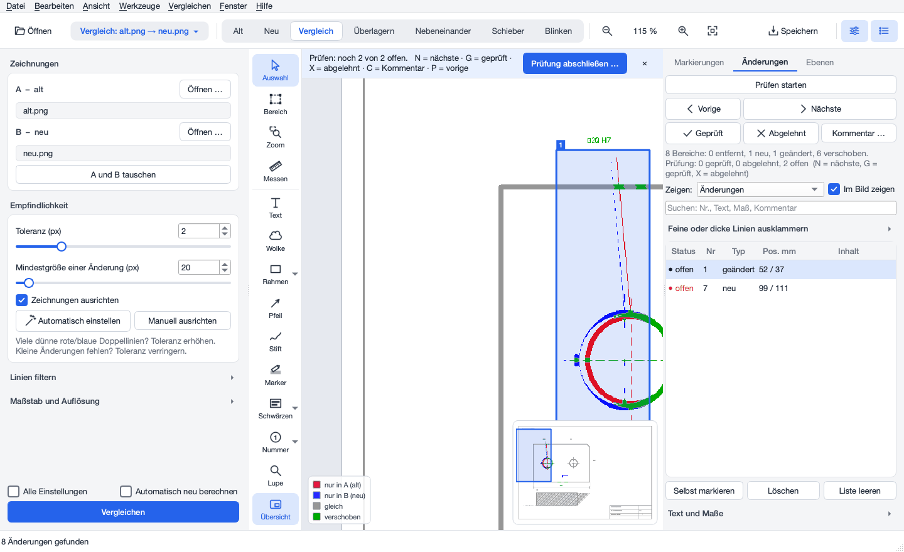
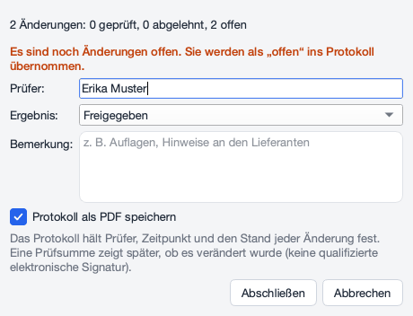
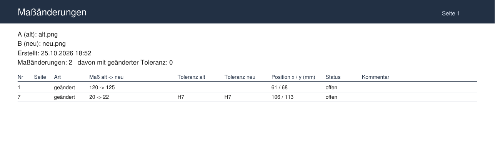
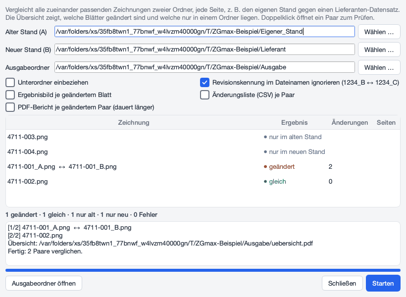

ZGmax zeigt technische Zeichnungen an und vergleicht zwei Stände (alt und neu): Unterschiede werden farbig markiert, nummeriert und lassen sich Schritt für Schritt prüfen, kommentieren, vermessen und als Bild, PDF oder Liste speichern. Für Automatisierung gibt es zusätzlich die Anleitung Kommandozeile. English: Manual.
Tastenkürzel: Strg steht auf dem Mac für ⌘. Einzeltasten wie F oder N wirken, wenn das Bild den Fokus hat (einmal hineinklicken).
Viele kleine Fundstellen? Links „Automatisch einstellen“ klicken: Das Programm misst, wie genau die beiden Zeichnungen übereinanderliegen, und stellt Toleranz und Suchbereiche passend ein.

| Variante | So geht's |
|---|---|
| App (empfohlen) | Mac: ZGmax.app in den Ordner
Programme ziehen und öffnen. Beim ersten Start meldet macOS evtl. „nicht verifizierter Entwickler“: App mit
Rechtsklick → Öffnen → Öffnen bestätigen (nur einmal nötig). Zeichnungen und Projekte lassen sich auf das
Programmsymbol ziehen.Windows: ZIP entpacken (z. B. nach C:\Programme\ZGmax oder
auf einen USB-Stick) und ZGmax.exe starten. Keine Installation, kein Python nötig. Desktop-Symbol:
Datei → Desktop-Verknüpfung erstellen. |
| Mit Python | Doppelklick auf Start ZGmax.command (Mac) bzw.
Start ZGmax.bat (Windows). Beim ersten Mal werden die nötigen Pakete in getesteten Versionen
installiert (Internet nötig). Direkt: python programm/drawing_viewer.py [alt [neu]]. |
| Bereich | Inhalt |
|---|---|
| Menüleiste | Alle Funktionen: Datei (Öffnen, Projekt, Exportieren, Drucken, Markierungen), Bearbeiten, Ansicht, Werkzeuge (Zeichenwerkzeuge), Vergleichen (alles zum Vergleich: starten, Vergleich einstellen, prüfen, Text und Maße, Stapel und Revisionen), Fenster, Hilfe. Was im aktuellen Modus nicht geht, ist ausgegraut. |
| Leiste oben | Öffnen und das Modus-Schild: Ansehen: datei (grau, eine Zeichnung) oder Vergleich: alt → neu (blau). Ein Klick darauf zeigt, was man tun kann – im Vergleich Vergleichen (neu berechnen), A und B tauschen, eine andere alte oder neue Zeichnung wählen. Haben sich Einstellungen geändert, zeigt das Schild ● und einen blauen Rand. Beim Ansehen steht daneben Vergleichen mit … (zweite Zeichnung öffnen). Im Vergleich folgen die Ansichten als Umschalter (Alt, Neu, Vergleich, Überlagern, Nebeneinander, Schieber, Blinken); dann Zoom (−, Zoomstufe, +, Ganze Zeichnung), Speichern und die Schalter für die beiden Seitenleisten Optionen (Einstellungen, links) und Elemente (Markierungen, Änderungen, Ebenen – rechts). Ist das Fenster schmal, verlieren die Knöpfe nach und nach ihren Text (Name im Tooltip); noch schmaler stehen Überlagern, Schieber und Blinken nur noch im Menü Ansicht (Tasten 4, 5, 6). Auf der Startseite ist die Leiste fast leer. |
| Werkzeugpalette (links am Bild) | Auswahl, Bereich, Zoom, Messen, Text, Wolke, Formen (▾ Rahmen, Ellipse, Linie, Linienzug, Polygon), Pfeil, Stift, Marker, Schwärzen (▾ Schwärzen, Verpixeln), Nummer, Stempel; bei wenig Platz nur Symbole; unten Lupe und Übersicht. Das gewählte Werkzeug ist blau. |
| Seitenleiste Optionen | Im Vergleich: Zeichnungen A und B, Empfindlichkeit, Seiten, Maßstab und Vergleichen. Beim Ansehen nur die Zeichnung, Mit anderer Zeichnung vergleichen …, Seiten und Maßstab. |
| Optionszeile (über dem Bild) | Erscheint nur bei Bedarf und zeigt die Einstellungen des gewählten Werkzeugs, z. B. beim Messen Messart, Einrasten, Maßstab und Kalibrieren; beim Markieren Farbe und Größe; beim Blinken Geschwindigkeit und Pause; bei Alt/Neu Änderungen hervorheben. Ist das Bild schmal, bricht sie in eine zweite Zeile um. |
| Suchleiste | Erscheint mit Strg+F über dem Bild, siehe Text suchen. |
| Hinweisleiste | Blau = Information, gelb = Warnung, rot = Fehler (mit Details). Statt vieler Meldungsfenster. |
| Statusleiste (unten) | Was gerade passiert, Fortschritt in Prozent mit Abbrechen, Mausposition in px und mm. |
Was selten gebraucht wird, ist zunächst verborgen. Der Haken Alle Einstellungen unten in der Leiste Optionen (oder Ansicht → Alle Einstellungen zeigen) blendet zusätzlich Ausschnitt/Zonen, Vektordaten, erweiterte Optionen und das Protokoll ein.
Das geht immer, egal welches Werkzeug gewählt ist:
| Aktion | Wirkung |
|---|---|
| Mausrad | Zoomen an der Mausposition |
| Trackpad: zwei Finger schieben / aufziehen | Verschieben / Zoomen (Strg+zwei Finger = zoomen) |
| Leeres Papier mit der linken Maustaste ziehen | Verschieben (Werkzeug Auswahl) |
| Mittlere Maustaste (Rad) ziehen | Verschieben |
| In Nebeneinander über die Mitte ziehen | Verschieben geht ohne Absetzen weiter, beide Hälften bleiben gleich |
| Rechte Maustaste ziehen | Zoom-Rahmen: genau in den aufgezogenen Bereich zoomen |
| Kurzer Rechtsklick | Menü (u. a. Ganze Zeichnung, Werkzeuge, Kopieren) |
| F, Doppelklick ins Leere, Doppelklick mit dem Mausrad, Knopf Ganze Zeichnung | Ganze Zeichnung zeigen |
| Klick auf die Zoomstufe (z. B. „35 %“) | Originalgröße 100 % |
| + / −, Pfeiltasten | Zoomen / Verschieben |
| Werkzeug Zoom (Z) | Zoom-Rahmen mit Fadenkreuz mit der linken Maustaste, beliebig oft hintereinander; einfacher Klick = ganze Zeichnung; Esc = zurück zur Auswahl. |
| Übersicht (unten in der Palette) | Sobald hineingezoomt ist, zeigt unten rechts eine kleine Karte die ganze Zeichnung mit dem sichtbaren Ausschnitt. Klicken oder ziehen springt dorthin. |
| Lupe (L) | Vergrößert den Bereich unter dem Mauszeiger (2× bis 8×, Optionszeile). |
| R | Ansicht um 90° drehen (nur Anzeige; Messen und Markieren funktionieren weiter) |
Ausschnitte merken: Ansicht → Ausschnitte → Ausschnitt merken … (Strg+D) speichert den sichtbaren Ausschnitt unter einem Namen, z. B. „Schnitt A-A“ oder „Schriftfeld“. Im selben Menü springt ein Klick wieder genau dorthin, auch bei anderer Fenstergröße. Ausschnitte gelten je Seite und werden im Projekt gespeichert; Ausschnitt löschen entfernt einen.

| Ansicht | Taste | Zeigt |
|---|---|---|
| Alt / Neu | 1 / 2 | Nur die alte bzw. neue Zeichnung im Original (grau bzw. farbig wie in der Datei). Mit Änderungen hervorheben in der Optionszeile (8 / 7) erscheinen darin entfernte Stellen rot bzw. neue blau. |
| Vergleich | 3 | Das Ergebnis in Farbe (Legende unten links; abschaltbar mit Ansicht → Legende anzeigen – gilt auch für Bild, Kopie und Druck) |
| Nebeneinander | 9 | Alt links, neu rechts; beide Hälften zoomen und verschieben gemeinsam |
| Überlagern | 4 | Beide ohne Toleranz übereinander – zeigt, was die Automatik herausrechnet |
| Blinken | 6 | Wechselt zwischen alt und neu; Geschwindigkeit und Pause erscheinen in der Optionszeile. Leertaste wechselt von Hand. |
| Schieber | 5 | Links alt, rechts neu; Trennlinie mit der Maus ziehen |

Farbe: Farbige Zeichnungen (z. B. PDF mit farbigen Ebenen) erscheinen in den Ansichten Alt, Neu, Nebeneinander, Blinken und Schieber in ihren Originalfarben, graue Scans in ihren Grautönen. Vergleich, Überlagern und Änderungen hervorheben arbeiten immer schwarz-weiß (rot/blau/grau). Verglichen wird stets die Schwarz-Weiß-Fassung. Abschaltbar: Ansicht → Original anzeigen (Farbe, Graustufen).
Farben umkehren (I, Ansicht → Farben umkehren): helle Linien auf dunklem Grund – angenehm im Dunkeln oder bei langer Bildschirmarbeit. Im Vergleich wird nur das Papier dunkel, Rot/Blau/Grün bleiben. Gilt nur für die Anzeige; gespeicherte Bilder und Ausdrucke bleiben normal. Unabhängig davon stellt Ansicht → Darstellung (Automatisch, Hell, Dunkel) das Erscheinungsbild der Bedienoberfläche ein.
Toleranz ist die wichtigste Einstellung: Linien, die weniger als n Pixel auseinanderliegen, gelten als gleich (bei 200 dpi ist 1 Pixel etwa 0,13 mm). Viele dünne rote/blaue Doppellinien → erhöhen; kleine Änderungen fehlen → verringern. Mindestgröße: kleinere Unterschiede (Staub, Punkte) werden ignoriert. Danach Vergleichen; ein Punkt (●) am Knopf zeigt, dass sich seit der letzten Berechnung etwas geändert hat.
Linien filtern (linke Leiste, beim Ansehen und im Vergleich): zeigt und vergleicht nur Linien einer bestimmten Strichbreite. Nur Konturen (dicke Linien) blendet Maß-, Hinweis- und Mittellinien, Schraffur und normalen Text aus – übrig bleiben die Körperkanten; die Grenze bestimmt das Programm aus der Zeichnung. Nur dünne Linien zeigt das Gegenteil. Mit Strichbreite selbst wählen gibt man die Breite in Pixeln von … bis … vor (ohne = keine Grenze). Beim Ansehen wirkt der Filter sofort, im Vergleich mit Vergleichen; das Modus-Schild zeigt dann · Linienfilter. Er wird im Projekt gespeichert. Funktioniert nur, wenn die Zeichnung unterschiedliche Strichstärken hat.

Automatisch einstellen misst am aktuellen Zeichnungspaar:
Was eine wichtige Änderung ist, kann das Programm nicht wissen; die Vorschläge stehen in der Hinweisleiste und lassen sich jederzeit von Hand ändern. In die Zahlenfelder lässt sich jeder Wert tippen, auch kleinere oder größere als am Regler.
Zeichnungen ausrichten (Haken, Standard an): Neu wird auf Alt ausgerichtet. Ohne Haken liegen beide genau so übereinander, wie sie in den Dateien sind (links oben bündig, ohne Skalieren und ohne Feinausrichtung) – z. B. für exakt gleich erzeugte PDF aus dem CAD.
Werkzeug Messen (M) wählen. In der Optionszeile stehen Messart, Einrasten, der aktuelle Maßstab und Kalibrieren.
| Messart | Bedienung | Ergebnis |
|---|---|---|
| Länge | 2 Punkte | mm, als Bemaßung mit Pfeilspitzen |
| Linienzug | beliebig viele Punkte, Ende mit Doppelklick, Enter oder Rechtsklick | Gesamtlänge mm |
| Winkel | 3 Punkte: Schenkel – Scheitel – Schenkel | Grad |
| Radius | 3 Punkte auf dem Kreis/Bogen | Radius und Durchmesser |
| Fläche | Eckpunkte, Ende wie Linienzug | mm² |
| Maßkette | Punkte nacheinander anklicken, Ende wie Linienzug | je Abschnitt ein Maß, Summe in der Liste |
Einrasten: Der Zeiger rastet an Linien ein (grünes Quadrat); an zwei parallelen Linien wird automatisch der senkrechte Abstand gemessen. Umschalt gedrückt = frei messen. Messungen bleiben als Maß im Bild, lassen sich mit Auswahl verschieben und an den weißen Punkten ändern. Maße sehen aus wie eine Bemaßung: dünne Linie, Pfeilspitzen, der Wert mittig über der Maßlinie und parallel zu ihr; bei kurzen Maßen steht er außen hinter dem Pfeil. Den Wert kann man an seinem Punkt beliebig verschieben (dann führt eine Hinweislinie zur Messung). Größe ändert Zahl und Pfeile gemeinsam; die Zahl wächst mit dem Zoom wie auf dem Papier und wird nie unlesbar klein. Einheit (mm, cm, m, in) und Stellen (Nachkommastellen) stehen in der Messen-Zeile und gelten für alle Maße, die Liste und alle Exporte.
Fangpunkte wie im CAD: Neben Linien rastet der Zeiger an Ecken, Schnitt- und Endpunkten (Kreuz) und an Kreismittelpunkten (Kreis mit Kreuz) ein – einfach in die Nähe zeigen.
Längen und Koordinaten eintippen: Beim Messen (und bei Linienzug/Polygon) einfach lostippen; es öffnet sich ein
Eingabefeld am Zeiger: 25 = 25 in Richtung des Mauszeigers vom letzten Punkt, 25<30 = 25 unter
30° (gegen den Uhrzeigersinn), @10;5 = relativ zum letzten Punkt, 100;50 = absolut ab Nullpunkt.
Einheit wie in der Messen-Zeile. Nullpunkt: Rechtsklick → Nullpunkt hier setzen (rastet ebenfalls ein); die
Statusleiste zeigt dann x/y ab dort (y nach oben wie im CAD).
Summen und Zählung: Unter der Markierungsliste stehen Summe der Längen und Flächen sowie die Anzahl je Art – für die Auswahl (mehrere gewählt) oder für alle. Datei → Markierungen → Messungen und Zählung als CSV (Excel) speichert alle Maße mit Wert, Einheit und Seite.
Stimmen die mm? Umgerechnet wird mit mm = Pixel × 25,4 ÷ dpi × Maßstab. Die Auflösung liest das Programm aus der Datei (sonst 200 dpi).

Alle Markierungen sind Vektoren: Sie bleiben einzeln anklickbar, verschiebbar und änderbar (Farbe, Strichstärke über Größe, Form an den weißen Punkten) und werden als echte PDF-Kommentare bzw. SVG-Elemente gespeichert.
| Werkzeug | Bedienung |
|---|---|
| Text (T) | Klick ins Bild und direkt lostippen; Ziehen erzeugt ein Textfeld dieser Breite mit automatischem Zeilenumbruch (Breite später am Punkt rechts ändern). Strg+Enter oder Klick daneben = fertig, Esc = verwerfen. Doppelklick auf einen Text ändert ihn an Ort und Stelle. |
| Wolke (W) | Revisionswolke aufziehen |
| Formen ▾ | Ein Knopf für Rahmen, Ellipse, Linie, Linienzug, Polygon; das kleine Dreieck wählt die Form, der Knopf zeigt die zuletzt benutzte. Rahmen/Ellipse aufziehen, Linie vom Anfang zum Ende ziehen. Linienzug und Polygon: Punkte anklicken, Doppelklick, Enter oder Rechtsklick beendet; die Eckpunkte lassen sich danach einzeln verschieben. |
| Pfeil | Vom Anfang zur Spitze ziehen |
| Stift | Freihand zeichnen. Jede Linie bleibt eine eigene Markierung; an den Ecken skalieren. |
| Marker | Fläche farbig hinterlegen (Textmarker, Standard gelb) |
| Schwärzen ▾ | Schwärzen (schwarze Fläche; mit dem Haken Mit Papierfarbe stattdessen in der Farbe des Papiers ringsum, meist weiß „ausgemalt“) oder Verpixeln (grobes Mosaik mit Rauschen und wenigen Stufen, nicht zurückrechenbar; Größe = Blockgröße) aufziehen – um Namen, Preise, Kundendaten unkenntlich zu machen. Im Programm bleibt es eine verschiebbare Markierung; in jeder Ausgabe (Bild, PDF, SVG, Bericht, Druck, Kopie, durchsuchbares PDF, Vektorisieren, bearbeitete Zeichnung) wird es unwiderruflich eingebrannt – auch wenn Markierungen ausgeblendet sind. Darunter liegender Text wird nicht als durchsuchbarer Text mitgespeichert. Die Originaldatei bleibt unverändert. |
| Nummer | Jeder Klick setzt den nächsten nummerierten Kreis; Startnummer in der Optionszeile |
| Stempel | Klick, dann Status (FREIGEGEBEN, GEPRÜFT …), Name und Datum |
Werkzeug behalten (Haken in der Optionszeile): Nach dem Zeichnen bleibt das Werkzeug aktiv, z. B. für mehrere Pfeile nacheinander. Ohne Haken geht es zurück zur Auswahl, damit man das Gezeichnete gleich verschieben kann. Stift, Nummer und Messen bleiben immer aktiv; Esc beendet das Werkzeug. Schneller: Doppelklick auf ein Zeichenwerkzeug in der Palette schaltet Werkzeug behalten ein, Doppelklick auf Auswahl, Bereich, Zoom oder Messen schaltet es wieder aus.
Werkzeugkasten: Vorlagen in der Optionszeile (oder Werkzeuge → Werkzeugkasten) speichert das aktuelle Werkzeug mit Farbe und Größe als Vorlage, z. B. „Wolke rot dick“ oder „Marker grün“, und wählt es später mit einem Klick. Eigene Stempel: Im Stempel-Fenster beliebigen Text eintippen (z. B. „ZUR KENNTNIS“) und Als eigenen Stempel merken.
Kommentare und Unterhaltung: Ist genau eine Markierung gewählt, zeigt der Reiter Markierungen darunter Kommentar, Antworten und Status. Antworten fügt eine Antwort mit Name und Zeit hinzu; Mein Status setzt den eigenen Prüfstatus (Akzeptiert, Abgelehnt, Abgebrochen, Abgeschlossen – wie in Acrobat). Beim ersten Mal fragt das Programm nach dem Namen. Antworten und Status gehen in PDF mit Anmerkungen und XFDF als echte Unterhaltung mit (in Acrobat und Bluebeam sichtbar) und kommen beim Einlesen wieder zurück. Die Liste zeigt 💬 Anzahl der Antworten und die gesetzten Status.
Farbe und Größe stehen in der Optionszeile; ohne Auswahl gelten sie für die nächste Markierung, mit Auswahl für die gewählte(n). Mit Auswahl (V) anklicken, verschieben, an den Ecken die Größe ändern; Doppelklick = bearbeiten, Rechtsklick = Menü, Entf = löschen, Strg+Z = rückgängig. Beim Verschieben oder Ziehen an einer Ecke hält Umschalt die Bewegung waagerecht oder senkrecht. Kanten und Mitten rasten an anderen Markierungen ein (gestrichelte Hilfslinie); Alt gedrückt = ohne Einrasten. Beim Zeichnen mit gedrückter Umschalt-Taste rasten Linie und Pfeil in 45°-Schritten ein, Ellipse wird ein Kreis, Rechteck und Wolke werden quadratisch. Mehrere auswählen: Strg oder Umschalt gedrückt halten und anklicken, oder mit Umschalt einen Rahmen über leeres Papier ziehen; dann gemeinsam verschieben, Farbe/Größe ändern, kopieren (Strg+C) oder löschen. Alle Markierungen stehen im Reiter Markierungen rechts (dort ebenfalls mehrere wählen, Entf löscht sie; Alle löschen … leert die Liste). H blendet alle Markierungen, Nummern und Zonen aus – was ausgeblendet ist, wird auch nicht gespeichert.

Prüfung abschließen (Vergleichen → Prüfung abschließen … oder Knopf in der Hinweisleiste): Name des Prüfers, Ergebnis (Freigegeben, Freigegeben mit Auflagen, Nicht freigegeben) und Bemerkung. Das Programm hält den Stand jeder Änderung (Status, Kommentar, Maß), Zeitpunkt und die Prüfsummen beider Zeichnungsdateien als Prüfprotokoll im Projekt fest und speichert es auf Wunsch als PDF. Eine Prüfsumme (SHA-256) über das Protokoll zeigt später, ob es nachträglich verändert wurde – das ist ein Nachweis gegen unbemerktes Ändern, keine qualifizierte elektronische Signatur. Unter der Liste steht danach „✔ Freigegeben – Name, Datum“; ändert sich der Prüfstand danach, steht dort „Prüfstand seitdem geändert – erneut abschließen“. Vergleichen → Prüfprotokolle … listet alle abgeschlossenen Prüfungen mit Prüfung der Prüfsumme.

Suchen: Das Feld über der Liste filtert beim Tippen nach Nummer (#12), Art, Text, Maß, Beschreibung, Status oder Kommentar; Liste, Bild und Ausgaben zeigen dann nur die Treffer. Esc oder das Kreuz leert es. Ebenso hat der Reiter Markierungen ein Suchfeld (Art, Text, Kommentar, Name).
Zeigen: „Änderungen“ (Standard) zeigt alles außer nur verschobenen Teilen; außerdem nach Art, „nur geänderter Text“, „nur geänderte Maße“, „Konturen und Maße“ (nur Änderungen an dicken Linien, also Körperkanten, oder an Maßen – feine Linien und Schraffur fallen weg) oder „offen“ filterbar. Feine oder dicke Linien ausklammern (unter dem Suchfeld): Regler Feiner als blendet Änderungen an dünneren Linien aus (z. B. ab 3 px: Maß- und Hinweislinien, Schraffur, Text), Dicker als solche an dickeren (z. B. nur Maße und Text sehen); 0 = aus. Gemessen wird die Strichbreite der ganzen betroffenen Linie. Die Zeichnung selbst bleibt vollständig – anders als Optionen → Linien filtern, das Linien auch aus Anzeige und Vergleich nimmt. Kleine Änderungen nach Fläche blendet Optionen → Mindestgröße einer Änderung aus. Der Filter gilt für Liste, Bild, PDF-Bericht, CSV und Bildexport: ausgegeben wird nur, was in der Liste steht, gelöschte Einträge nie. Klick auf eine Zeile springt ins Bild, Klick auf einen Rahmen wählt die Zeile; Doppelklick bearbeitet Text A/B und Beschreibung. Selbst markieren nimmt einen aufgezogenen Bereich als eigene Änderung auf; Löschen (oder Entf/Rücktaste) entfernt unerwünschte Funde; die übrigen behalten ihre Nummer, Vergleichen → Änderungen neu nummerieren zählt wieder ab 1. Klick ins Leere oder Esc hebt die Auswahl auf. Vergleichen → Abgelehnte als Zonen übernehmen macht aus allen abgelehnten Funden Zonen, die bei den nächsten Vergleichen (auch im Stapel) nicht mehr gemeldet werden. Status und Kommentare werden im Projekt gespeichert und erscheinen in CSV, PDF-Bericht und PDF mit Anmerkungen – das ist das Prüfprotokoll.
Strg+F (Bearbeiten → Text suchen …) öffnet die Suchleiste über dem Bild. Suchbegriff eingeben,
z. B. H7, Bohrung oder eine Positionsnummer; alle Treffer werden gelb umrahmt, der aktuelle kräftiger.
Enter oder F3 = nächster Treffer, Umschalt+F3 = voriger, Esc schließt.
Im Vergleich wählt man, ob in Neu oder Alt gesucht wird; die Treffer liegen passend auf dem Ergebnis.
Bei PDF mit echtem Text wird dieser genutzt (sofort, exakt). Bei Scans und Bildern liest die Texterkennung den Text einmal ein (je nach Größe einige Sekunden bis eine Minute, mit Fortschritt). Groß-/Kleinschreibung spielt keine Rolle.
Werkzeug Bereich (B): Rechteck aufziehen; mit Umschalt oder Strg weitere Rechtecke dazu. Die Auswahl bleibt nach dem Loslassen markiert und erfasst alles darin: den Zeichnungsinhalt, Markierungen, Maße und Änderungsrahmen. Die Optionszeile zeigt Größe und Anzahl und bietet:
| Befehl | Wirkung |
|---|---|
| Kopieren (Strg+C) | Wie angezeigt, mit Markierungen, als Bild in die Zwischenablage (außerhalb der Rechtecke durchsichtig; mit Nur Linien (ohne Papier) auch das Papier). In ZGmax eingefügt, kommen Zeichnungsteil (als Bild) und Markierungen getrennt und einzeln bearbeitbar zurück. |
| Verschieben | In die Auswahl klicken und ziehen. Markierungen wandern immer mit; beim Ansehen einer einzelnen Zeichnung auch der Zeichnungsinhalt – mit Nur Linien (ohne Papier) nur die Linien. Die frei gewordene Fläche bekommt die Papierfarbe. |
| Zuschneiden | Setzt einen Zuschnitt-Rahmen – es wird nichts gelöscht. Außerhalb ist die Zeichnung abgedunkelt; der Rahmen lässt sich mit Auswahl an den Anfassern (Ecken und Kanten) anpassen. Speichern, Drucken und Kopieren zeigen nur den Rahmen; ragt er über das Blatt, bekommt die Ausgabe einen Rand. Gilt auch im Vergleich. Bearbeiten → Zuschnitt aufheben entfernt ihn; beim Ansehen einer Zeichnung schneidet Zuschnitt endgültig anwenden die Zeichnung selbst zu. |
| Markierungen entfernen (Entf) | Markierungen, Änderungen und Zonen in der Auswahl löschen; die Zeichnung bleibt. Den Zeichnungsinhalt entfernt Mehr ▾ → Zeichnung im Bereich leeren. |
| Exportieren … | Auswahl als PNG, TIFF, JPG, PDF oder SVG mit Ebenen speichern. |
| Mehr ▾ | Nur Linien/Geometrie kopieren … (siehe unten), Ausschneiden (Strg+X) und Zeichnung im Bereich leeren (beim Ansehen einer Zeichnung). |
Esc hebt die Auswahl auf. Alle Änderungen an der Zeichnung lassen sich mit Strg+Z rückgängig machen.
Nur Linien oder nur Geometrie kopieren (Strg+Umschalt+C): Ein Fenster zeigt die Vorschau. Alles = wie angezeigt; Nur Linien = Papier durchsichtig; Nur Geometrie = nur die dicken Körperkanten, ohne Maßlinien, Maßpfeile, Hinweislinien, Mittellinien, Schraffur und Text. Das Programm unterscheidet nach Strichstärke und schlägt eine Grenze vor (Linien ab Breite), die man in der Vorschau anpassen kann. Gut bei normgerecht dicken und dünnen Linien; bei Scans mit gleich dünnen Linien bleibt wenig übrig; an Kanten hängende Maßpfeile oder schräge dünne Kanten können verbleiben bzw. fehlen.
Einfügen (Strg+V, Bearbeiten → Einfügen): Bilder aus der Zwischenablage (z. B. ein Bildschirmfoto oder ein Ausschnitt aus einer anderen Zeichnung) erscheinen als verschiebbares Bild auf der Ebene Eingefügte Bilder – an den Ecken skalieren, jederzeit löschen. Text wird als Text-Markierung eingefügt, kopierte Markierungen als Markierungen. Ist nichts geöffnet, öffnet Strg+V ein Bild als neue Zeichnung (ebenso Datei → Bild aus Zwischenablage öffnen).
Bearbeiten → Zeichnung bearbeiten (beim Ansehen einer einzelnen Zeichnung). Scan oder Foto aufbereiten (gut vor einem Vergleich: weniger falsche Änderungen): erst Entzerren bzw. Gerade ausrichten, dann Hintergrund ausgleichen. Liegt ein geöffneter Scan merklich schief oder sieht er aus wie ein Foto eines Blatts, zeigt die Leiste oben einen Hinweis mit Knopf dafür (es geschieht nichts von selbst). Die Originaldatei bleibt unverändert; Bearbeitete Zeichnung speichern … speichert das Ergebnis (PNG, TIFF, PDF, JPG, ohne Markierungen). Beim Schließen fragt das Programm nach, wenn die Bearbeitung noch nicht gespeichert ist. Markierungen wandern bei allen Änderungen mit.
| Befehl | Wirkung |
|---|---|
| Ausschnitt verschieben | Bereich aufziehen, an die neue Stelle ziehen oder mit den Pfeiltasten schieben (Umschalt = 10 px), Enter = übernehmen. Gleiches geht mit dem Werkzeug Bereich. |
| Auf Bereich zuschneiden (endgültig) | Die Zeichnung selbst auf den mit Bereich gewählten Teil zuschneiden (sonst lieber den verstellbaren Zuschnitt-Rahmen nutzen). |
| 90° nach rechts / links, 180° drehen | Die Zeichnung selbst drehen (R dreht dagegen nur die Ansicht). |
| Gerade ausrichten … | Für schräg eingescannte Blätter. Das Programm erkennt den Winkel aus den langen Linien (Rahmen, Schriftfeld) und zeigt eine Vorschau mit Raster; der Winkel lässt sich von Hand ändern (positiv = gegen den Uhrzeigersinn). Das Blatt wird dabei etwas größer, damit keine Ecke verloren geht. |
| Gerade ausrichten an Linie | Eine Kante nachziehen, die waagerecht oder senkrecht sein soll (Blattrand, Rahmen) – die Zeichnung dreht sich passend. Auch aus dem Fenster Gerade ausrichten über An Linie nachzeichnen. |
| Entzerren (4 Ecken) … | Für ein Foto des Blatts (Handy, schräg von oben). Die Ecken des Blatts werden erkannt und lassen sich verschieben (mit Lupe); Blatt erkennen und Ecken an den Bildrand setzen sie neu. Das Blatt wird rechteckig gerechnet. Unter Format A4 bis A0 wählen, dann stimmen die mm (die Auflösung wird passend gesetzt); sonst gilt das Seitenverhältnis der Ecken. Ein gewölbtes Blatt wird nur annähernd gerade. |
| Hintergrund ausgleichen … | Rechnet Schatten, Falten, Flecken und vergilbtes Papier heraus: das Papier wird gleichmäßig weiß (oder eine eigene Farbe), die Linien bleiben. Stärke regelt, wie kräftige Flecken noch weiß werden; zu hoch lässt sehr helle Linien verblassen. Sehr scharfe Knicke können als feine Linie stehen bleiben. |
| Helligkeit und Kontrast … | Mit Vorschau; Automatisch macht graues Papier weiß und blasse Linien kräftig. |
| Bildgröße und Auflösung … | Pixel neu berechnen (Größe auf dem Papier bleibt, z. B. 600 dpi → 200 dpi für kleinere Dateien) oder Nur Auflösung ändern (falsche dpi-Angabe korrigieren; die mm-Werte ändern sich). |
Ansicht → Ebenen blendet rechts den Reiter Ebenen ein (sonst verborgen). Feste Ebenen, von oben nach unten wie sie übereinanderliegen: Schwärzungen, Maße, Markierungen, Eingefügte Bilder, Änderungen, Zonen, Zeichnung. Je Ebene ein Haken (sichtbar) und ein Schloss (gesperrt). Der Reiter ist anfangs sichtbar und lässt sich über Ansicht → Ebenen ausblenden. Einzelne Markierungen blendet der Haken vor ihrem Eintrag im Reiter Markierungen aus (oder Rechtsklick → Ausblenden).
Als Ebenen speichern: PDF mit Anmerkungen legt jede sichtbare Ebene als echte PDF-Ebene an (in Acrobat links unter Ebenen ein- und ausblendbar). Als SVG mit Ebenen erzeugt Ebenen für Inkscape, Illustrator & Co.; Markierungen und Änderungsrahmen sind dort einzelne, bearbeitbare Vektoren. TIFF und PNG kennen keine allgemein lesbaren Ebenen und werden flach gespeichert.
Ebenen der PDF-Datei: Hat eine PDF eigene Ebenen (z. B. Bemaßung, Text, verdeckte Kanten aus dem CAD), stehen sie darunter im Abschnitt Ebenen der PDF-Datei. Ohne Haken wird die Ebene nicht gezeichnet und – im Vergleich – auch nicht verglichen. Die Auswahl wird im Projekt gespeichert.

Im Bereich Text und Maße (rechte Leiste, aufklappen; auch im Menü Vergleichen):
Die Texterkennung ist in der App enthalten; im Python-Betrieb bietet das Programm beim ersten Gebrauch die Installation an (ca. 60 MB, Internet nötig).
PDF mit Kommentaren öffnen: Die Kommentare werden nicht ins Bild gezeichnet, sondern automatisch als bearbeitbare Markierungen übernommen (im Vergleich die von Alt und Neu, jeweils an der richtigen Stelle) – verschieben, ändern, löschen wie eigene. Bei Projekten geschieht das nicht, die enthalten ihre Markierungen schon.
Datei → Markierungen → Kommentare einlesen (XFDF, PDF) … übernimmt Anmerkungen aus anderen Programmen als eigene Markierungen:
Übernommen werden Text, Rahmen, Wolke, Marker, Pfeil, Linie und Stempel mit Farbe, Verfasser, Datum und Kommentartext (in der Markierungsliste sichtbar). Im Vergleich fragt das Programm, ob die Kommentare zur alten oder zur neuen Zeichnung gehören; bei der neuen werden sie passend auf das Ergebnis umgerechnet. Unbekannte Arten (z. B. Ton, Anhang) werden übersprungen und gemeldet.
Datei → Markierungen → Markierungen als XFDF speichern … schreibt die eigenen Markierungen und Maße als XFDF, das man in Acrobat & Co. in die Original-PDF importiert (Kommentare → Importieren).
Liegen die Zeichnungen nach dem automatischen Ausrichten nicht sauber übereinander (z. B. stark verzogener Scan, anderes Blattformat), hilft Vergleichen → Vergleich einstellen → Manuell ausrichten (3 Punkte) (auch als Knopf neben „Automatisch einstellen“): Nacheinander dreimal einen Punkt in Alt und denselben Punkt in Neu anklicken (die Hinweisleiste sagt, welcher dran ist; am besten weit auseinanderliegende Ecken oder Kreuzungen). Das Programm verschiebt, dreht und skaliert die neue Zeichnung danach und vergleicht neu. Manuelle Ausrichtung zurücksetzen hebt das auf. Die Ausrichtung wird im Projekt gespeichert.
Blättern: Bei mehrseitigen PDF/TIFF steht oben in der Leiste die Seitenwahl ◀ Seite / Anzahl ▶: Pfeile klicken oder die Seitenzahl eintippen. Bild ↑ / Bild ↓ (Mac: Fn+↑/↓) blättern zur vorigen bzw. nächsten Seite, ebenso Ansicht → Vorige Seite / Nächste Seite. Links erscheint zusätzlich der Bereich Seiten (bei PDF mit Vorschaubildern): Seite anklicken oder Seite A / Seite B einzeln einstellen; A und B gemeinsam blättern ist Standard. Alle Seiten vergleichen vergleicht jede Seite und schreibt in die Liste, wie viele Änderungen sie hat (rot = geändert, grün = gleich).
Markierungen gehören zur Seite: Jede Seite (im Vergleich jedes Seitenpaar) hat ihre eigenen Markierungen; beim Blättern bleiben sie erhalten, die Seitenliste zeigt ihre Anzahl, das Projekt speichert alle. Auch der Maßstab und die Kalibrierung gelten je Seite. Ebenso die Änderungsliste mit Prüfstand: Wer auf Seite 1 prüft, auf Seite 2 weiterblättert und zurückkommt, findet Status und Kommentare wieder; die Seitenliste zeigt je Seite „n Änderungen, m offen“. Speichern → PDF mit Anmerkungen – alle Seiten legt jede Seite mit ihren Markierungen (im Vergleich: Ergebnis mit Änderungen) in eine PDF; PDF-Änderungsbericht – alle Seiten berichtet über alle Seitenpaare. Beide erscheinen nur bei mehrseitigen Dateien.
Sichtbar mit Ansicht → Alle Einstellungen zeigen.
Markierungen, Maße und Zonen gehören zum Blatt: Bei Ausschnittwechsel bleiben sie an derselben Stelle der Zeichnung.
Dateiformate: PNG, JPG, TIF (auch mehrseitig), BMP, WEBP, JP2, GIF, PDF, SVG, XPS und DXF. DXF wird schwarz auf weiß aus dem Modellbereich gezeichnet (Einheit mm; sehr große Zeichnungen werden auf A0 verkleinert). DWG kann nicht direkt gelesen werden – im CAD-Programm als DXF oder PDF speichern. Durchsichtige Flächen (PNG mit Transparenz) gelten als weißes Papier; 16-Bit- und CMYK-Bilder werden umgerechnet. Bei einer passwortgeschützten PDF fragt das Programm nach dem Passwort; es gilt bis zum Beenden und wird nicht gespeichert.
Vektordaten (PDF): Enthalten beide PDF echte Linien und Text (aus dem CAD-System), erscheint links der Bereich Vektordaten (PDF): Vektorvergleich vergleicht Linie gegen Linie und Text gegen Text, ohne Rastern (Toleranz Standard 0,05 mm; beide Zeichnungen brauchen denselben Blattursprung). Ebenen und Farben … wählt aus, was verglichen wird (z. B. alles außer Bemaßung).
| Speichern ▾ | Ergebnis |
|---|---|
| In die Zwischenablage (wie angezeigt) | Der sichtbare Ausschnitt genau so wie am Bildschirm, ohne Legende, als Bild in die Zwischenablage (Strg+Umschalt+E) – zum Einfügen in E-Mail, Word oder PowerPoint |
| Als Bild speichern (wie angezeigt) | Ansicht mit eingebrannten Markierungen (und Legende) als PNG, JPG, TIFF oder PDF – auch für kommentierte Fotos und Bildschirmfotos |
| Als SVG mit Ebenen | Zeichnung, Änderungen und Markierungen als Ebenen; Markierungen als Vektoren |
| Durchsuchbares PDF (Texterkennung) | Beim Ansehen einer Zeichnung: PDF mit unsichtbarem Text über dem Bild – in jedem PDF-Programm durchsuchbar und kopierbar (Scans per Texterkennung, PDF mit eigenem Text direkt). |
| Vektorisieren (SVG, PDF, DXF) | Pixelzeichnung in Linien umwandeln: Mittellinien (einzelne Linien, gut für CAD; gefüllte Pfeile und Punkte als Flächen) oder Umrisse (sieht genau aus wie das Original). Ganze Zeichnung oder nur der gewählte Bereich; DXF in mm (mit Maßstab). Text wird als Linien gezeichnet, nicht als Text erkannt. |
| PDF mit Anmerkungen (Acrobat) | Ergebnis als PDF; eigene Markierungen als echte PDF-Kommentare (in Acrobat & Co. anklicken, beantworten, abhaken). Wurden Änderungen gesucht, kommen die in der Liste angezeigten (nach dem Filter Zeigen) als Revisionswolken dazu; gesucht wird dafür nicht automatisch. |
| PDF-Änderungsbericht | Übersicht, Liste und Detailbilder je Änderung, mit Prüfstatus und Kommentaren |
| … – alle Seiten | Bei mehrseitigen Dateien: PDF mit Anmerkungen bzw. Änderungsbericht über alle Seiten |
| Änderungsliste (CSV) | Für Excel: Nummer, Art, Position, Texte, Maß, Beschreibung, Status, Kommentar |
| Drucken im Maßstab | Ganzes Blatt, sichtbarer Ausschnitt oder gewählter Bereich (Werkzeug Bereich); 100 % = Originalgröße (10 mm auf dem Blatt = 10 mm auf Papier), bei Bedarf auf mehrere Seiten verteilt, oder eingepasst. Unten auf jeder Seite stehen Datei, Größe und Zeichnungsmaßstab. |
| Projekt (.zgmax) | Dateien, Einstellungen, Markierungen, Zonen, gemerkte Ausschnitte und Prüfstand (je Seite). Mit Zeichnungen ins Projekt einbetten (Standard an) stecken auch die Zeichnungen in der Datei: Das Projekt lässt sich verschicken und anderswo ohne die Originaldateien öffnen. Fehlt beim Öffnen das Original oder wurde es seitdem geändert, nimmt das Programm die eingebettete Fassung. Ohne Einbetten speichert das Projekt nur Verweise; zieht man Projekt und Zeichnungen gemeinsam um, findet es sie wieder. |
Automatische Sicherung: Ungespeicherte Markierungen und Prüfergebnisse werden jede Minute gesichert. Stürzt das Programm ab, bietet es beim nächsten Start die Wiederherstellung an.
Ordner vergleichen (Vergleichen → Ordner vergleichen (Stapel) …): vergleicht alle zueinander passenden Zeichnungen zweier Ordner, jede Seite – z. B. den eigenen Stand gegen einen Lieferanten-Datensatz. Zugeordnet wird über den Dateinamen; auf Wunsch auch in Unterordnern und ohne Revisionskennung am Namensende (1234_B ↔ 1234_C). Die Übersicht zeigt je Zeichnung ● geändert (mit Anzahl und betroffenen Seiten), ● gleich, nur im alten bzw. nur im neuen Stand oder Fehler; Doppelklick öffnet ein Paar zum Prüfen. In den Ausgabeordner kommen uebersicht.pdf und uebersicht.csv, auf Wunsch je geändertem Blatt ein Ergebnisbild, eine CSV-Liste und ein PDF-Bericht. Vergleichen → Revisionen vergleichen: mehrere Stände einer Zeichnung der Reihe nach (A → B → C …) mit Änderungshistorie. Beide nutzen die aktuellen Einstellungen.

Beides gilt nach einem Neustart; das Programm bietet ihn gleich an (offene Arbeit wird vorher gesichert).
Alle Einstellungen zurücksetzen (Hilfe): Darstellung, Sprache, Größe, Werte des Vergleichs, Werkzeugoptionen und Fensterlage zurück auf Standard; auf Wunsch bleibt die Liste Zuletzt verwendet. Dateien, Projekte und Markierungen bleiben unverändert.
Version und Neuerungen: Hilfe → Was ist neu … zeigt die Änderungshistorie in der Sprache der Oberfläche. Nach einem Update weist das Programm beim ersten Start darauf hin. Die Versionsnummer steht unter Über ZGmax (Mac: Programmmenü ZGmax → Über ZGmax) und wird in jedem Projekt mitgespeichert; ein Projekt aus einer neueren Version öffnet mit Hinweis.
| Einstellung | Einfach erklärt |
|---|---|
| Linienschwelle | Ab welcher Dunkelheit etwas als Linie gilt. Blasse/gelbe Linien fehlen → erhöhen. |
| Ausrichtung | affine (Verschiebung, Drehung, Maßstab), euclidean (ohne Maßstab), translation (nur Verschiebung), none |
| Schraffur-Unterdrückung | Gleich dichte Schraffuren zählen nicht als Änderung (Wert = größter Linienabstand) |
| Blöcke verschoben | Wie weit ein ganzer Bereich verschoben sein darf, um grün statt rot/blau zu erscheinen |
| Objekt-Verschiebung | Einzelne leicht verrutschte Maße/Texte gelten nicht als Änderung (grün); geänderte Zahlen bleiben Änderungen |
| Kantensäume an Linien ignorieren | Siehe Kantensäume |
| Zeichen genau prüfen / Ungleichmäßiges Papier ausgleichen | Siehe Weitere Prüfungen |
Automatisch neu berechnen (unten in der linken Leiste, Standard aus): Geänderte Einstellungen gelten erst mit Vergleichen; ein Punkt (●) am Knopf zeigt, dass neu verglichen werden sollte. An: Jede Änderung vergleicht kurz danach neu. Beim Ansehen einer einzelnen Zeichnung wirkt alles sofort. Feinausrichtung in Kacheln und Objekt-Drehung stellt Automatisch einstellen ein; sie sind nur noch in der Kommandozeile einstellbar.
Automatisch aus den Menüs des Programms erzeugt (packaging/menu_reference.py); Menüs mit wechselndem Inhalt (zuletzt verwendet, Fenster, gemerkte Ausschnitte, Werkzeugkasten) fehlen hier.
| Befehl | Taste | Wirkung |
|---|---|---|
| Neues Fenster | Strg+N | Weiteres Fenster für einen anderen Vergleich |
| Startseite | ||
| Alte Zeichnung (A) öffnen … | Strg+Umschalt+A | |
| Neue Zeichnung (B) öffnen … | Strg+Umschalt+B | |
| Einzelne Zeichnung öffnen … | Strg+Umschalt+O | |
| Bild aus Zwischenablage öffnen | Z. B. ein Bildschirmfoto als Zeichnung öffnen | |
| Projekt öffnen … | Strg+O | |
| Projekt speichern | Strg+S | |
| Projekt speichern unter … | Strg+Umschalt+S | |
| Zeichnungen ins Projekt einbetten | An (Standard): Die .zgmax-Datei enthält auch die Zeichnungen und kann so verschickt und anderswo geöffnet werden. Aus: nur Verweise auf die Dateien (kleiner). | |
| Schließen | Strg+W | Vergleich bzw. Projekt schließen und zur Startseite (das Programm bleibt offen) |
| Drucken im Maßstab … | Strg+P | |
| Beenden | Strg+Q |
| Befehl | Taste | Wirkung |
|---|---|---|
| Als Bild speichern (wie angezeigt) … | Strg+E | Bild mit Markierungen wie angezeigt als PNG, JPG, TIFF oder PDF |
| In die Zwischenablage (wie angezeigt) | Strg+Umschalt+E | Den sichtbaren Ausschnitt genau so, wie er am Bildschirm zu sehen ist, als Bild in die Zwischenablage legen (ohne Legende) – z. B. zum Einfügen in E-Mail oder Präsentation |
| PDF mit Anmerkungen (Acrobat) … | ||
| PDF mit Anmerkungen – alle Seiten … | Jede Seite mit ihren Markierungen (im Vergleich: Ergebnis mit Änderungen) in einer PDF | |
| Als SVG mit Ebenen … | Zeichnung, Änderungen und Markierungen als getrennte Ebenen; Markierungen als Vektoren (in Inkscape, Illustrator & Co. bearbeitbar) | |
| Durchsuchbares PDF (Texterkennung) … | Zeichnung als PDF mit unsichtbarem Text: in jedem PDF-Programm durchsuchbar und kopierbar (Scans per Texterkennung) | |
| Vektorisieren (SVG, PDF, DXF) … | Pixelzeichnung in Linien umwandeln, z. B. für CAD (DXF) oder verlustfreies Vergrößern | |
| Bearbeitete Zeichnung speichern … | Die Zeichnung mit verschobenen Ausschnitten als Bild oder PDF speichern (ohne Markierungen) | |
| PDF-Änderungsbericht … | ||
| PDF-Änderungsbericht – alle Seiten … | Änderungsbericht über alle Seiten in einer PDF | |
| Änderungsliste (CSV) … |
| Befehl | Taste | Wirkung |
|---|---|---|
| Markierungen speichern … | ||
| Markierungen laden … | ||
| Kommentare einlesen (XFDF, PDF) … | Kommentare aus Acrobat & Co. übernehmen: XFDF-Datei oder kommentierte PDF | |
| Markierungen als XFDF speichern … | Für Acrobat & Co.: Kommentare → Importieren | |
| Messungen und Zählung als CSV (Excel) … | Alle Maße mit Wert, Einheit und Seite sowie die Anzahl je Markierungsart |
| Befehl | Taste | Wirkung |
|---|---|---|
| Rückgängig | Strg+Z | Rückgängig (Markierungen, Maße, Zonen) |
| Wiederholen | Strg+Umschalt+Z | |
| Text suchen … | Strg+F | Text in der Zeichnung suchen (PDF-Text, bei Bildern Texterkennung) |
| Weitersuchen | F3 | Nächster Treffer (F3, Enter) |
| Rückwärts suchen | Umschalt+F3 | Voriger Treffer (Umschalt+F3) |
| Schriftfeld lesen | ||
| Löschen | Entf | Gewählte Markierung, Änderung, Zone oder Bereichsauswahl löschen (Entf) |
| Alle Markierungen löschen … | ||
| Ausschneiden | Strg+X | Bereichsauswahl ausschneiden (Markierungen; beim Ansehen auch die Zeichnung) |
| Kopieren | Strg+C | Bereichsauswahl, gewählte Markierungen oder sonst die ganze Ansicht (wie angezeigt) kopieren |
| Nur Linien/Geometrie kopieren … | Strg+Umschalt+C | Bereich aufziehen und kopieren: alles, nur Linien oder nur die Geometrie (ohne Maße, Text und dünne Linien) |
| Einfügen | Strg+V | Aus der Zwischenablage einfügen: Markierungen, Bild (verschiebbar) oder Text. Ist nichts geöffnet, wird ein Bild als Zeichnung geöffnet. |
| Zuschnitt aufheben | Den Zuschnitt-Rahmen entfernen; Ausgaben zeigen wieder das ganze Blatt | |
| Zuschnitt endgültig anwenden | Die Zeichnung selbst auf den Zuschnitt-Rahmen zuschneiden (rückgängig mit Strg+Z) |
| Befehl | Taste | Wirkung |
|---|---|---|
| Ausschnitt verschieben | Teil der Zeichnung ausschneiden und an anderer Stelle einsetzen (beim Ansehen einer einzelnen Zeichnung) | |
| Auf Bereich zuschneiden (endgültig) | Die Zeichnung selbst auf den mit „Bereich“ gewählten Teil zuschneiden | |
| 90° nach rechts drehen | ||
| 90° nach links drehen | ||
| 180° drehen | ||
| Gerade ausrichten … | Schräg eingescannte Zeichnung gerade drehen: Winkel automatisch erkennen oder von Hand | |
| Gerade ausrichten an Linie | Eine Kante nachziehen, die waagerecht oder senkrecht sein soll | |
| Entzerren (4 Ecken) … | Foto eines Blatts rechteckig rechnen: Ecken werden erkannt und lassen sich verschieben; Papierformat wählbar, damit die mm stimmen | |
| Hintergrund ausgleichen … | Schatten, Falten und vergilbtes Papier eines Scans herausrechnen; Papier weiß oder in eigener Farbe | |
| Helligkeit und Kontrast … | ||
| Bildgröße und Auflösung … | ||
| Bearbeitete Zeichnung speichern … | Die Zeichnung mit verschobenen Ausschnitten als Bild oder PDF speichern (ohne Markierungen) |
| Befehl | Taste | Wirkung |
|---|---|---|
| Alt | 1 | Nur die alte Zeichnung A (Taste 1) |
| Neu | 2 | Nur die neue Zeichnung B (Taste 2) |
| Vergleich | 3 | Rot = nur alt, Blau = nur neu, Grün = nur verschoben (Taste 3) |
| Überlagern | 4 | Beide Zeichnungen ohne Toleranz übereinander (Taste 4) |
| Nebeneinander | 9 | Alt und neu nebeneinander, gemeinsam zoomen und verschieben (Taste 9) |
| Schieber | 5 | Links alt, rechts neu; Trennlinie ziehen (Taste 5) |
| Blinken | 6 | Wechselt zwischen alt und neu (Leertaste = von Hand) (Taste 6) |
| Neu mit Änderungen | 7 | Neue Zeichnung, neue und geänderte Stellen blau (Taste 7) |
| Alt mit Änderungen | 8 | Alte Zeichnung, entfernte und geänderte Stellen rot (Taste 8) |
| Ganze Zeichnung | F | Ganze Zeichnung zeigen (F oder Doppelklick) |
| Originalgröße (100 %) | Strg+0 | |
| Vergrößern | Strg++ | Vergrößern (Mausrad, +) |
| Verkleinern | Strg+- | Verkleinern (Mausrad, −) |
| Zoom-Rahmen | Bereich aufziehen und hineinzoomen (geht auch jederzeit mit der rechten Maustaste) | |
| Ansicht drehen (90°) | R | Nur die Anzeige drehen (Taste R) |
| Vorige Seite | Bild ↑ | Vorige Seite (Bild auf) |
| Nächste Seite | Bild ↓ | Nächste Seite (Bild ab) |
| Übersicht | Kleine Übersicht unten rechts, wenn hineingezoomt ist. Klicken oder ziehen springt dorthin. | |
| Lupe | L | Vergrößert den Bereich unter dem Mauszeiger (L) |
| Markierungen anzeigen | H | Nummern, Zonen, Markierungen und Maße ein-/ausblenden (H). Ausgeblendetes wird auch nicht gespeichert. |
| Legende anzeigen | Farblegende im Vergleich – auch beim Speichern als Bild, Kopieren und Drucken | |
| Ebenen | Ebenen ein-/ausblenden und sperren | |
| Änderungen als Revisionswolken | Nummerierte Änderungen als Wolke statt als Rahmen zeigen und speichern | |
| Original anzeigen (Farbe, Graustufen) | Alt, Neu, Nebeneinander, Schieber und Blinken zeigen die Datei, wie sie ist (Farbe oder Graustufen). Aus = Schwarz-Weiß-Fassung, mit der verglichen wird. | |
| Farben umkehren | I | Helle Linien auf dunklem Grund (nur Anzeige; gespeicherte Bilder bleiben normal). Taste I |
| Optionen | Seitenleiste mit den Einstellungen des Vergleichs ein-/ausblenden | |
| Elemente | Seitenleiste mit allem, was auf der Zeichnung liegt: Änderungen, Markierungen und (über Ansicht → Ebenen) Ebenen | |
| Alle Einstellungen zeigen | Auch selten gebrauchte Einstellungen, Vektordaten, Zonen und das Protokoll zeigen |
| Befehl | Taste | Wirkung |
|---|---|---|
| Automatisch (wie System) | ||
| Hell | ||
| Dunkel |
| Befehl | Taste | Wirkung |
|---|---|---|
| 90 % | ||
| 100 % (Standard) | ||
| 115 % | ||
| 130 % | ||
| 150 % |
| Befehl | Taste | Wirkung |
|---|---|---|
| Auswahl | V | Anklicken und verschieben. Leeres Papier ziehen = Ansicht verschieben. (V) |
| Bereich | B | Bereich aufziehen (mit Umschalt/Strg weitere dazu). Wählt Zeichnung, Markierungen und Änderungen darin: kopieren, ausschneiden, verschieben, löschen, exportieren. (B) |
| Zoom | Z | Zoom-Rahmen mit Fadenkreuz: Bereich aufziehen. Einfacher Klick = ganze Zeichnung. Geht auch jederzeit mit der rechten Maustaste. (Z) |
| Messen | M | Länge, Winkel, Radius, Fläche messen; rastet an Linien ein (M) |
| Text | T | Ins Bild klicken und Text eingeben (T) |
| Wolke | W | Revisionswolke aufziehen (W) |
| Rahmen | Rahmen aufziehen | |
| Ellipse | Ellipse oder Kreis aufziehen | |
| Linie | Linie vom Anfang zum Ende ziehen | |
| Linienzug | Punkte anklicken; Doppelklick, Enter oder Rechtsklick beendet | |
| Polygon | Eckpunkte anklicken; Doppelklick, Enter oder Rechtsklick schließt | |
| Pfeil | Pfeil vom Anfang zur Spitze ziehen | |
| Stift | Freihand zeichnen; bleibt eine verschiebbare, änderbare Linie | |
| Marker | Textmarker: Fläche farbig hinterlegen | |
| Schwärzen | Bereich schwärzen: in jeder Ausgabe (Bild, PDF, Druck, Kopie) unwiderruflich eingebrannt | |
| Verpixeln | Bereich verpixeln (Mosaik); Größe = Blockgröße. In jeder Ausgabe eingebrannt | |
| Nummer | Fortlaufend nummerierte Kreise setzen | |
| Stempel | Stempel mit Status, Name und Datum |
| Befehl | Taste | Wirkung |
|---|---|---|
| Vergleichen | Strg+Enter | Vergleich (neu) berechnen |
| Prüfen starten | Strg+Umschalt+R | Änderungen suchen (falls nötig), die erste offene zeigen und Schritt für Schritt prüfen: N = nächste, G = geprüft, X = abgelehnt, C = Kommentar |
| Änderungen suchen | Strg+Umschalt+F | |
| Änderungen neu nummerieren | Liste fortlaufend ab 1 nummerieren (sonst behalten die Einträge ihre Nummer auch nach dem Löschen) | |
| Nächste Änderung | N | Zur nächsten offenen Änderung (N) |
| Vorige Änderung | P | Zur vorigen Änderung (P) |
| Als geprüft markieren | G | Gewählte Änderung ist geprüft (G), weiter zur nächsten |
| Als abgelehnt markieren | X | Gewählte Änderung ist nicht in Ordnung (X) |
| Kommentar … | C | Kommentar zur gewählten Änderung (C) |
| Abgelehnte als Zonen übernehmen | Als abgelehnt markierte Änderungen künftig nicht mehr vergleichen | |
| Prüfung abschließen … | Prüfer, Ergebnis (freigegeben, mit Auflagen, nicht freigegeben) und Bemerkung festhalten: Protokoll mit Prüfsumme im Projekt, auf Wunsch als PDF | |
| Prüfprotokolle … | Abgeschlossene Prüfungen dieses Projekts ansehen und als PDF speichern | |
| Geänderten Text finden | Liest den Text in jeder Änderung (Alt → Neu, auch Maße) – aus dem PDF, wenn es echten Text enthält, sonst per Texterkennung in jeder Lage (waagerecht und senkrecht), deutsch und englisch. Danach zeigen Liste und Bild nur Änderungen, deren Text sich geändert hat; „Zeigen: Änderungen“ holt alles zurück. | |
| Geänderte Maße finden | Liest die Zahlen jeder Änderung und zeigt danach nur die Änderungen, bei denen sich eine Maßzahl geändert hat (z. B. 12,5 → 12,8). Rein grafische Änderungen werden ausgeblendet; „Zeigen: Änderungen“ holt sie zurück. | |
| Maßänderungen als Tabelle … | Geänderte Maße mit alt → neu, Toleranz alt/neu, Position und Prüfstatus als PDF oder CSV – z. B. für Lieferanten und Fertigung | |
| Schriftfeld-Index prüfen | Liest den Index (Revision) im Schriftfeld von Alt und Neu und warnt, wenn die Zeichnung geändert, der Index aber gleich geblieben ist – oder umgekehrt. | |
| Alle Seiten vergleichen | ||
| Ordner vergleichen (Stapel) … | Alle passenden Zeichnungen zweier Ordner vergleichen, z. B. eigenen Stand gegen Lieferanten-Datensatz: Übersicht, welche Blätter geändert sind oder fehlen | |
| Revisionen vergleichen (A → B → C) … |
| Befehl | Taste | Wirkung |
|---|---|---|
| Automatisch einstellen | Toleranz, Schwelle und Suchbereiche aus diesem Zeichnungspaar bestimmen | |
| Manuell ausrichten (3 Punkte) | Wenn die automatische Ausrichtung danebenliegt: drei gleiche Punkte in Alt und Neu anklicken | |
| Manuelle Ausrichtung zurücksetzen | ||
| Ausschnitt wählen | ||
| Ganzes Blatt vergleichen | ||
| Bereiche zuordnen (A ↔ B) … | ||
| Zone zeichnen (nicht vergleichen) |
| Befehl | Taste | Wirkung |
|---|---|---|
| Anleitung | F1 | |
| Einführung zeigen | Die kurze Einführung (Öffnen, Vergleichen, Prüfen) auf der Startseite zeigen | |
| Anleitung Kommandozeile | ||
| Tastenkürzel | ||
| Was ist neu … | Änderungshistorie: was sich in welcher Version geändert hat | |
| Logdatei öffnen | ||
| Befehl für Kommandozeile kopieren | ||
| Alle Einstellungen zurücksetzen … | Darstellung, Sprache, Größe, Werte des Vergleichs und Werkzeugoptionen auf Standard; Dateien und Projekte bleiben unverändert | |
| Über ZGmax |
| Taste | Wirkung |
|---|---|
| 1 2 3 9 4 6 5 7 8 | Alt, Neu, Vergleich, Nebeneinander, Überlagern, Blinken, Schieber, Neu / Alt mit Änderungen |
| Leertaste | Zwischen alt und neu wechseln |
| F / Strg+0 | Ganze Zeichnung / 100 % |
| V B Z M T W | Auswahl, Bereich, Zoom, Messen, Text, Wolke |
| Strg+F / F3 / Umschalt+F3 | Text suchen / nächster / voriger Treffer |
| N / P / G / X / C | Nächste / vorige Änderung, geprüft, abgelehnt, Kommentar |
| H / L / R / I | Markierungen aus/ein, Lupe, Ansicht drehen, Farben umkehren |
| Entf / Esc | Markierung löschen / Werkzeug beenden |
| Strg+Z / Strg+Umschalt+Z | Rückgängig / Wiederholen |
| Strg+C / X / V | Kopieren (Bereich, gewählte Markierungen oder ganzes Bild) / Ausschneiden / Einfügen |
| Strg+Umschalt+C | Nur Linien oder nur Geometrie kopieren |
| Strg+O / S / P / W / N | Projekt öffnen / speichern, drucken, schließen, neues Fenster |
| F1 | Diese Anleitung |
| Frage | Antwort |
|---|---|
| Viele kleine rote/blaue Stellen, die keine Änderung sind. | Automatisch einstellen; sonst Toleranz um 1 erhöhen oder Mindestgröße erhöhen. |
| Nach dem Verstellen eines Reglers ändert sich nichts. | Vergleichen klicken (oder Automatisch neu berechnen einschalten). |
| Die mm-Werte stimmen nicht. | In der Messen-Zeile Kalibrieren … oder den Maßstab eintragen. |
| Eine Markierung lässt sich nicht ändern. | Esc (zurück zur Auswahl), anklicken, Doppelklick = bearbeiten. |
| Der Vergleich dauert lange / braucht viel Speicher. | Sehr große Scans (über 100 Megapixel) brauchen einige Sekunden und einige GB Speicher. Mit Abbrechen stoppen; mit Ausschnitt nur den relevanten Teil vergleichen; bei PDF die dpi verringern (z. B. 150). |
| Etwas funktioniert nicht. | Die Hinweisleiste zeigt den Fehler (Details). Die Logdatei öffnet Hilfe → Logdatei öffnen. |